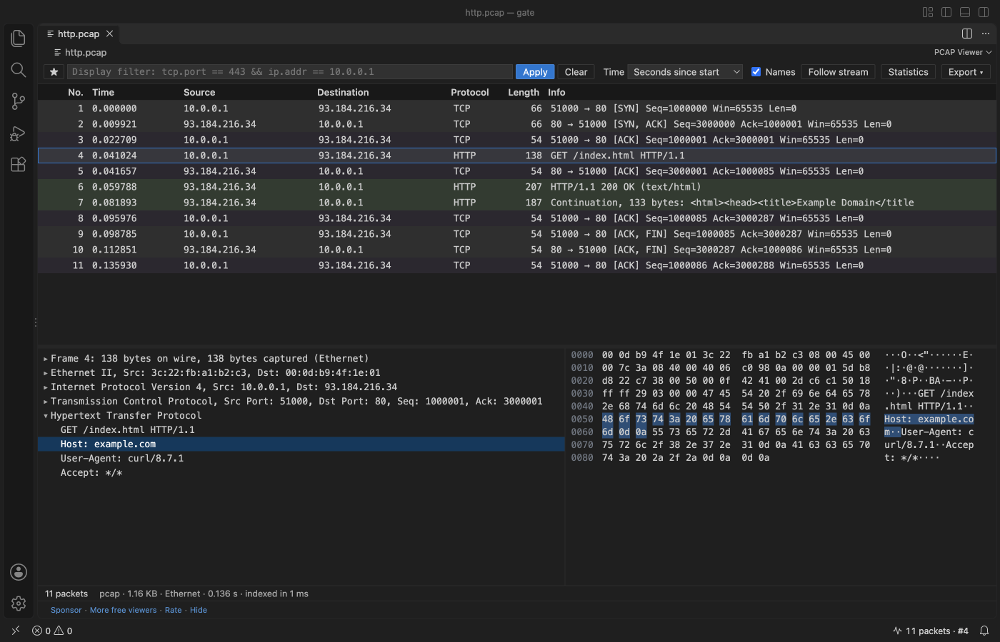

Как открыть PCAP-файл в VS Code
Установите бесплатное расширение PCAP Viewer и кликните по файлу .pcap или .pcapng. Вы увидите список пакетов, дерево протоколов, hex-панель, связанную с деревом, display-фильтры в стиле Wireshark, follow stream и статистику. Расширение само читает файл на JavaScript, поэтому Wireshark, tshark и sharkd не нужны. Просмотрщик бесплатный, а Zovo Pro (19 USD один раз) добавляет экспорт списка пакетов в CSV или JSON, отчёт о дампе в Markdown и сводку по папке, у каждого инструмента 3 бесплатных запуска.
Бесплатно, лицензия MIT. ID расширения zovo.zovo-pcap-viewer, версия 0.2.3.
Это руководство есть и на других языках: English · Français · Italiano · Português (Brasil) · Polski · 简体中文 · Čeština · हिन्दी · Bahasa Indonesia · 한국어 · Nederlands · Svenska · ไทย · Türkçe · Українська · Tiếng Việt · 繁體中文 · Deutsch · Español · 日本語

Как это сделать в VS Code
- Установите PCAP Viewer из Marketplace или нажмите Ctrl+P (Cmd+P на macOS) и выполните
ext install zovo.zovo-pcap-viewer. - Кликните по файлу
.pcap,.pcapng,.pcap.gz,.pcapng.gzили.ntar. Для.cap,.dmpи других имён кликните по файлу правой кнопкой в Explorer и выберите "Open in PCAP Viewer". - Введите display-фильтр, например
tcp.port == 443 && ip.addr == 10.0.0.1, и нажмите Enter. Поле становится зелёным, если фильтр верный, а если нет, сообщает, что не так. - Кликните по полю в дереве протоколов, чтобы подсветить его байты в hex-панели, или кликните по байту, чтобы найти его поле.
- Дважды кликните по пакету, чтобы проследить его поток TCP или UDP в виде ASCII, UTF-8 или hex-дампа. Поток можно скопировать или сохранить в файл.
- Нажмите Statistics, чтобы увидеть иерархию протоколов, conversations, endpoints и имена, найденные в дампе. Клик по строке фильтрует по ней.
- Откройте меню Export, чтобы сохранить выбранные пакеты или все пакеты, которые показывает фильтр, в новый файл pcap.
Что бесплатно и что добавляет Zovo Pro
Список пакетов, дерево протоколов, связанная hex-панель, display-фильтры, сохранённые фильтры, follow stream, статистика и экспорт пакетов в новый файл pcap бесплатны. Вход в аккаунт не нужен, всё работает офлайн.
Инструмент записывает пакеты, которые показывает фильтр, в файл CSV или JSON, по строке на пакет: номер, время UTC, секунды от начала, источник, назначение, порты, протокол, длина, фильтр потока, имена хостов из дампа и текст Info. CSV открывается в Excel, а текст, похожий на формулы, обезврежен. JSON подходит для jq и pandas. Вы получаете таблицу для тикета или скрипта, не копируя строки вручную.
Как запустить Export packet list to CSV or JSON (Zovo Pro)
- Откройте дамп и, если нужны не все пакеты, введите display-фильтр.
- Откройте меню Export на панели инструментов и выберите "Packet list as CSV" или "Packet list as JSON" или выполните "PCAP Viewer: Export Packet List to CSV or JSON (Pro)..." из Command Palette. Можно также кликнуть по дампу правой кнопкой в Explorer и выбрать "Zovo Pro: Export packet list to CSV or JSON".
- Выберите, куда сохранить файл. Запуск засчитывается, только если файл записан, поэтому Escape или ошибка запуск не тратят.
Export packet list to CSV or JSON можно запустить на вашем компьютере 3 раза бесплатно, потом расширение попросит лицензию. Никаких всплывающих окон и никакого обратного отсчёта.
Zovo Pro стоит 19 USD, оплата один раз. Это не подписка: лицензия включает Pro-инструменты во всех расширениях Zovo, а не только в PCAP Viewer. После оплаты картой (Stripe) ключ лицензии показывается на следующей странице. В VS Code выполните "Zovo Pro: Enter Zovo Pro license key" из Command Palette и вставьте ключ. Ключ проверяется на вашем компьютере, без запроса в сеть. Если вы платите через GitHub Sponsors, выберите уровень "$19 one time", а затем выполните "Zovo Pro: I already paid: unlock with GitHub Sponsors".
Лицензия для команды из 5 человек стоит 59 USD один раз (оплата картой). Все правила и все Pro-инструменты описаны на странице Zovo Pro (на английском).
Как установить в Cursor, Windsurf или VSCodium
- Откройте панель Extensions сочетанием Ctrl+Shift+X (Cmd+Shift+X на macOS).
- Найдите
zovo.zovo-pcap-viewerи нажмите Install. Cursor, Windsurf и VSCodium ставят расширения из Open VSX, где это расширение опубликовано какzovo/zovo-pcap-viewer. - Если в вашем редакторе нет каталога расширений, скачайте файл .vsix со страницы на Open VSX и выполните "Extensions: Install from VSIX...".
- Дальше всё работает так же, как в VS Code.
Что умеет PCAP Viewer
- pcap (микро- и наносекундный, little-endian и big-endian) и pcapng, в том числе в
.gz. - Ethernet, 802.1Q VLAN, Linux cooked capture (SLL и SLL2), raw IPv4 и IPv6, BSD loopback, заголовки 802.11 и radiotap.
- ARP, IPv4, IPv6, ICMP, ICMPv6, TCP, UDP, DNS и mDNS, DHCP, HTTP/1.x, записи TLS с именем сервера (SNI) и ALPN, а также длинные заголовки QUIC.
- Большие дампы. В проверках перед релизом дамп на 1 ГБ с 1 438 965 пакетами отобразился списком примерно за 2 с.
- Повреждённые файлы. Все пакеты до места повреждения показываются, а сообщение говорит, что не так и где.
Чего расширение не делает
- На поля разбираются только протоколы из списка. HTTP означает HTTP/1.x, для 802.11 разбирается заголовок, для QUIC длинный заголовок.
- Трафик TLS не расшифровывается. Видны записи TLS с именем сервера (SNI) и ALPN.
- Поле фильтра понимает распространённую часть синтаксиса display-фильтров Wireshark, но не весь синтаксис.
- Распаковка дампа
.gzостанавливается на 512 МБ (настройкаpcapViewer.maxGzipMB), и расширение сообщает об этом. - Файлы на удалённой или виртуальной файловой системе открываются, если они не больше 256 МБ (настройка
pcapViewer.maxRemoteMB).
Частые вопросы
Нужно ли устанавливать Wireshark?
Нет. PCAP Viewer читает pcap и pcapng на JavaScript внутри VS Code, на Windows, macOS и Linux. Он не использует Wireshark, tshark или sharkd.
Отправляет ли открытие дампа DNS-запросы?
Нет. Имена хостов берутся только из DNS-ответов в пакетах и из блоков имён в файлах pcapng. У расширения нет телеметрии, и оно не делает сетевых запросов.
Это бесплатно?
Да. Просмотрщик, фильтры, follow stream, статистика и экспорт в pcap бесплатны. Export packet list to CSV or JSON, Capture report и Folder summary относятся к Zovo Pro, у каждого 3 бесплатных запуска, дальше 19 USD один раз для всех расширений Zovo.
Работает ли это в Cursor?
Да. Расширение работает в VS Code 1.90 и новее и в редакторах, которые ставят расширения из Open VSX, например Cursor, Windsurf и VSCodium.
Подробнее
В английской версии руководства больше подробностей и других вариантов. Все функции и настройки описаны на странице PCAP Viewer (на английском).
Факты проверены 13 ноября 2026 года по текущей версии в Marketplace.